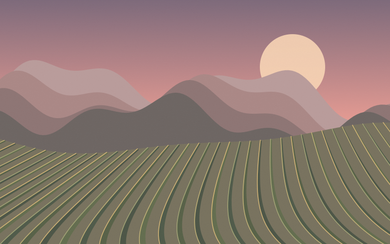
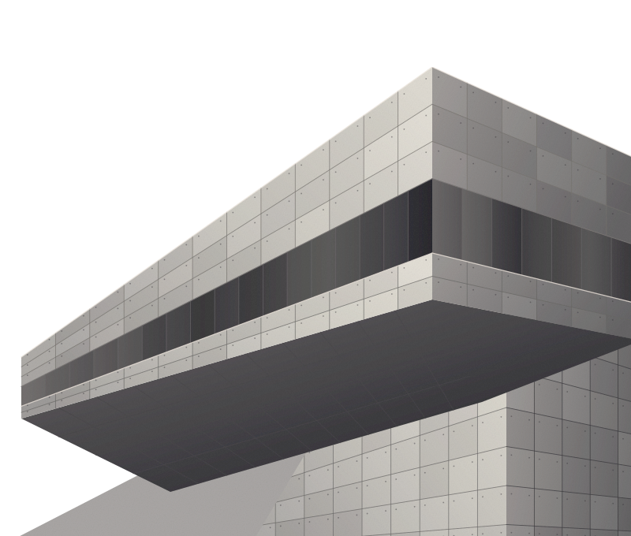
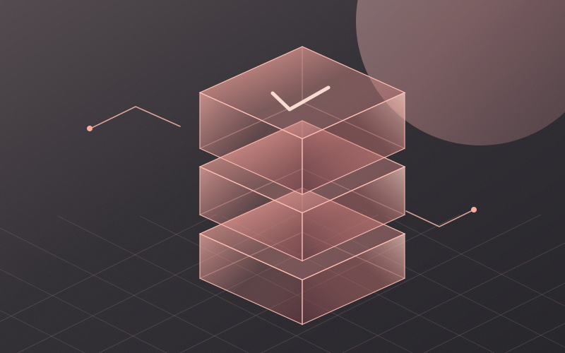
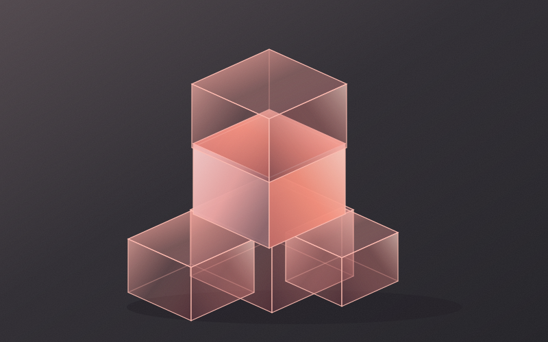
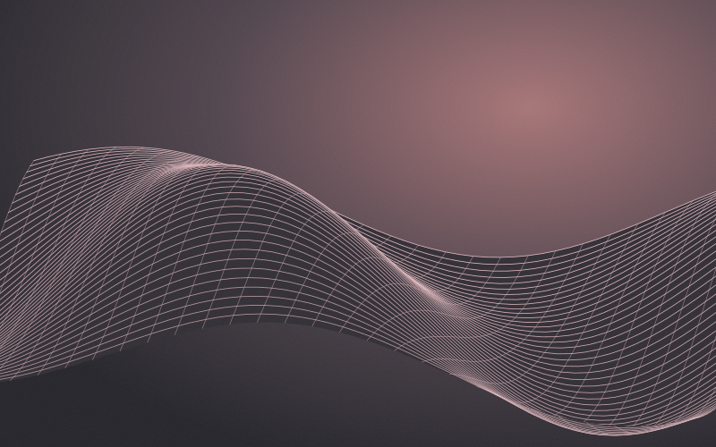
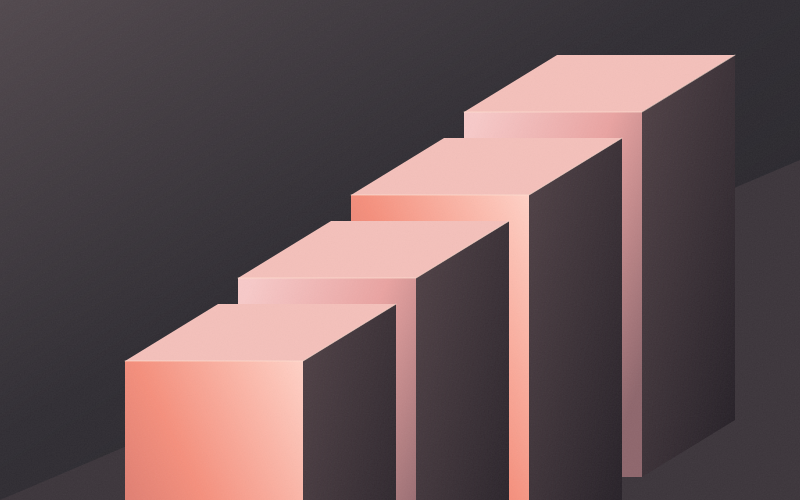

Project 1. Full-stack / Smart agriculture
AgriSense
Smart Agriculture Management System
A farm management application that recommends crops and fertilizer based on soil information.
- Java
- Spring Boot
- MySQL
- HTML
- CSS
- JavaScript
Exploring the intersection of artificial intelligence, software engineering, and meaningful digital experiences.
About
I’m Vasuki, a third-year engineering student at PSNA College of Engineering and Technology, specializing in artificial intelligence and machine learning.
I like taking an everyday problem and building something people can use. That interest draws me to full-stack development, intelligent systems, and the details that make software feel intuitive.

Projects
Five projects exploring software engineering, intelligent systems, and practical problem-solving.

Project 1. Full-stack / Smart agriculture
Smart Agriculture Management System
A farm management application that recommends crops and fertilizer based on soil information.

Project 2. Smart city / Full-stack
Smart City Management System
A city management platform for citizen complaints about traffic, waste, water and streetlights.

Project 3. AI / Chatbot development
Career Guidance Chatbot
A desktop chatbot that helps students explore career options through their skills and interests.

Project 4. Blockchain / Web development
Blockchain-based academic certificate verification
A decentralized application that uses blockchain records and QR codes to verify academic certificates.

Project 5. Smart infrastructure / Full-stack
Smart Vehicle Parking Management System
A parking management system that records vehicle entries and exits and shows which spaces are available.
Expertise
From writing a first line of Python to connecting a Spring Boot application to a database, these are the skills I work with.
Java, Python, C, C++
HTML, CSS, JavaScript
Spring Boot, JDBC
Artificial intelligence, machine learning, data science
MySQL, SQL
Object-oriented programming, data structures and algorithms, database management systems
VS Code, IntelliJ IDEA, Git, GitHub, XAMPP, Figma, Canva
Problem-solving, communication, teamwork
Experience
Internship
Livewire · Madurai, India
Completed an internship focused on chatbot development using Python.
Education
PSNA College of Engineering and Technology
CGPA 8.29 / 10Lakshmi Matriculation Higher Secondary School
73.5%Lakshmi Matriculation Higher Secondary School
84.6%Languages Tamil and English, spoken and written.
Certifications & training
Visual explorations
Three visual studies in volume, repetition, and light. A space to play with the forms that run through this portfolio.

Translucent cubes study how one surface changes the colour of the next.

A grid of fine lines bends across a continuous surface.

A staircase turns a single light source into bands of coral, blush and graphite.
Good technology
solves problems.
Great design
makes it matter.
I learn by building something, trying it, and finding the part that could work better. That habit keeps me curious about emerging technologies and the people who will use them.
Contact
Interested in technology, collaboration, and meaningful ideas. Let’s connect.